For Shawn's friend · refreshed 2026-11-02 · 250 miles around Manteno, IL · checked every morning
Yellow Bronco Board
Every yellow and yellow-gold Ford Bronco for sale within 250 miles, the best Bronco deals in any color, and three groups of vehicles better suited to someone who spends her life on the road. Photos, prices, KBB comparison and a payment estimate on every car; "View" opens the live listing.
Factory yellow, 250 mi
2 Broncos
2023 Heritage Editions in Yellowstone, the only yellow Ford ever painted on this Bronco
Yellow-gold Cyber Orange
28 Broncos
2021 to 2023 Cyber Orange and Raptor Code Orange, from $28,400
New Broncos on lots
3,218 in stock
Dealers are sitting on inventory: Big Bend 4-doors are going $9,000 and more under sticker
AI pick for a high-mileage driver
Toyota RAV4 Hybrid
Double the Bronco's mpg, the best reliability record in the group, roughly $2,844 a year less in gas
Since the last check on 2026-11-01: 10 listings new on the board; 0 price cuts. Rows with a yellow "since last check" pill are the changes.
Yellow Broncos Any-color Bronco deals Road-warrior hybrids Live-in-it space Bronco vibe, less drama How to decide
Yellow Broncos within 250 miles
Ford has painted exactly one yellow on the current Bronco: Yellowstone , offered only on the 2023 Heritage Edition. There is no yellow on the 2024, 2025 or 2026 color charts, so a yellow Bronco is a used 2023 Heritage, a Cyber Orange one (which reads yellow-gold in sunlight), or a wrap. 2 Yellowstone Heritage Editions are for sale inside the radius right now. Autotrader's yellow Bronco search .
Factory yellow: 2023 Heritage Edition in Yellowstone
1
2023 Ford Bronco Heritage Edition
$575 under KBB fair price One owner
49,461 mi 2.7L 6-cyl turbo, 4x4 Yellowstone 4-door ~19 mpg, about $6,145/yr in gas at 25,000 mi
The yellow one you can actually buy today. Heritage Edition means Oxford White roof, grille and wheels over Yellowstone paint, the 2.7 V6 and the Sasquatch 35-inch tire package. Price already cut twice from $56,995. Lafayette is a 90-minute drive.
UNLIMITED MOTORS 4, Lafayette, IN, 79 mi away, listed 30 days ago
2
2023 Ford Bronco Heritage Edition
One owner
42,013 mi 2.7L 6-cyl turbo, 4x4 Yellowstone 4-door ~19 mpg, about $6,145/yr in gas at 25,000 mi
Second Yellowstone Heritage, 7,000 fewer miles, one owner, at a 4.9-star Cadillac store in the Milwaukee suburbs. Listed with no price shown. KBB fair purchase price is about $55,350, so open at $52,000 and see.
Crest Cadillac Inc ★4.6, Brookfield, WI, 128 mi away, listed 9 days ago
Call for price
KBB fair $55,620
View Cyber Orange and Code Orange, ranked by deal
Cyber Orange Metallic Tri-coat (2021 to 2023) is a saturated yellow-orange; most people call it yellow or "school bus" in person. Code Orange is the Raptor's deeper orange. Ranked by dollars under KBB fair purchase price with credits for one owner, low miles and distance; accident cars are flagged and pushed down. See all orange Broncos on Autotrader .
1
no photo
2022 Ford Bronco Wildtrak
$3,653 under KBB fair price Autotrader: Great price Just listed
16,107 mi 2.7L 6-cyl turbo, 4x4 Orange Metallic 4-door ~17 mpg, about $6,868/yr in gas at 25,000 mi
Best orange buy on the board: Great price per Autotrader, $3,653 under KBB, 16,107 miles, 5.0-star dealer, Old Orchard Nissan in Skokie, IL, listed 5 days ago.
353A High Package
Old Orchard Nissan ★5.0, Skokie, IL, 56 mi away, listed 5 days ago
2
2021 Ford Bronco First Edition
$6,071 under KBB fair price Autotrader: Great price One owner Accident reported Price cut $2,413
32,000 mi 2.7L 6-cyl turbo, 4x4 Orange Metallic 4-door ~19 mpg, about $6,145/yr in gas at 25,000 mi
Fox GMC ★4.5, Comstock Park, MI, 167 mi away, listed 62 days ago
3
2021 Ford Bronco Outer Banks
Certified pre-owned $3,509 under KBB fair price Autotrader: Great price One owner Price cut $1,707
50,344 mi 2.3L 4-cyl turbo, 4x4 Cyber Orange Metallic Tricoat 4-door ~15 mpg, about $7,783/yr in gas at 25,000 mi
313A High Package
Rosen Ford ★4.6, Belleville, WI, 142 mi away, listed 89 days ago
4
2021 Ford Bronco First Edition
$3,699 under KBB fair price Autotrader: Great price One owner
35,563 mi 2.7L 6-cyl turbo, 4x4 Orange Metallic 4-door ~19 mpg, about $6,145/yr in gas at 25,000 mi
Kunes Lakes Chevrolet, Lake Bluff, IL, 71 mi away, listed 34 days ago
5
2022 Ford Bronco Black Diamond
$2,460 under KBB fair price Autotrader: Great price One owner Sasquatch (35s)
54,382 mi 2.3L 4-cyl turbo, 4x4 Orange Metallic 4-door ~15 mpg, about $7,783/yr in gas at 25,000 mi
Sasquatch Package
Andy Mohr Chrysler Dodge Jeep Ram ★4.3, Indianapolis, IN, 124 mi away, listed 48 days ago
6
2021 Ford Bronco First Edition
$2,748 under KBB fair price Autotrader: Great price
14,810 mi 2.7L 6-cyl turbo, 4x4 Orange Metallic 4-door ~19 mpg, about $6,145/yr in gas at 25,000 mi
D-Patrick Ford Lincoln ★4.7, Evansville, IN, 227 mi away, listed 143 days ago
7
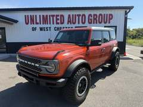
2023 Ford Bronco Badlands
$4,136 under KBB fair price Autotrader: Great price Accident reported Sasquatch (35s)
74,880 mi 2.7L 6-cyl turbo, 4x4 Orange 4-door ~17 mpg, about $6,868/yr in gas at 25,000 mi
334A Lux Package; Sasquatch Package
Unlimited Auto Group ★4.4, West Chester, OH, 224 mi away, listed 58 days ago
8
2022 Ford Bronco Raptor
Certified pre-owned $4,274 under KBB fair price
45,976 mi 3L 6-cyl turbo, 4x4 Cyber Orange Metallic Tricoat 4-door ~15 mpg, about $7,783/yr in gas at 25,000 mi
374A Lux Package; Interior Carbon Fiber Pack 6
Suntrup Ford - Westport ★4.2, Saint Louis, MO, 223 mi away, listed 59 days ago
9
2022 Ford Bronco Raptor
$2,845 under KBB fair price
38,984 mi 3L 6-cyl turbo, 4x4 Code Orange 4-door ~15 mpg, about $7,783/yr in gas at 25,000 mi
374A Lux Package; Interior Carbon Fiber Pack 6
Motor Cars of Chicago ★4.7, Joliet, IL, 29 mi away, listed 113 days ago
10
2021 Ford Bronco Outer Banks
$1,484 under KBB fair price Autotrader: Great price One owner
67,253 mi 2.3L 4-cyl turbo, 4x4 Cyber Orange Metallic Tricoat 4-door ~15 mpg, about $7,783/yr in gas at 25,000 mi
Van Horn Ford of Oconomowoc ★4.8, Oconomowoc, WI, 132 mi away, listed 12 days ago
11
2023 Ford Bronco Raptor
$1,278 under KBB fair price One owner
27,286 mi 3L 6-cyl turbo, 4x4 Code Orange 4-door ~15 mpg, about $7,783/yr in gas at 25,000 mi
374A Lux Package; Interior Carbon Fiber Pack 6
Heller Ford Sales Inc ★4.6, El Paso, IL, 71 mi away, listed 124 days ago
12
2022 Ford Bronco Badlands
$661 under KBB fair price Autotrader: Great price One owner Sasquatch (35s)
25,579 mi 2.7L 6-cyl turbo, 4x4 Orange Metallic 2-door ~17 mpg, about $6,868/yr in gas at 25,000 mi
334A Lux Package; Sasquatch Package
Premier Auto Source - IN ★4.3, Terre Haute, IN, 130 mi away, listed 401 days ago
13
2022 Ford Bronco Big Bend
$410 under KBB fair price Autotrader: Great price One owner Price cut $500
32,759 mi 2.7L 6-cyl turbo, 4x4 Cyber Orange Metallic Tricoat 2-door ~19 mpg, about $6,145/yr in gas at 25,000 mi
222A Mid Package
Webb Ford ★4.1, Highland, IN, 28 mi away, listed 12 days ago
14
2021 Ford Bronco Outer Banks
Certified pre-owned $1,528 under KBB fair price Autotrader: Great price
66,091 mi 2.3L 4-cyl turbo, 4x4 Orange Metallic 4-door ~15 mpg, about $7,783/yr in gas at 25,000 mi
Andy Mohr Ford ★4.3, Plainfield, IN, 132 mi away, listed 71 days ago
15
2022 Ford Bronco Black Diamond
Certified pre-owned $211 under KBB fair price One owner Sasquatch (35s)
66,188 mi 2.7L 6-cyl turbo, 4x4 Cyber Orange Met Tri-coat 4-door ~17 mpg, about $6,868/yr in gas at 25,000 mi
Sasquatch Package; 322A Mid Package
LAPORTE FORD, La Porte, IN, 65 mi away, listed 26 days ago
16
2022 Ford Bronco Big Bend
57,801 mi 2.3L 4-cyl turbo, 4x4 Cyber Orange Metallic Tricoat 4-door ~15 mpg, about $7,783/yr in gas at 25,000 mi
222A Mid Package
Hubler Chevrolet ★4.5, Indianapolis, IN, 143 mi away, listed 143 days ago
17
2022 Ford Bronco Wildtrak
Certified pre-owned $575 over KBB fair price Good price
50,135 mi 2.7L 6-cyl turbo, 4x4 Orange Metallic 4-door ~17 mpg, about $6,868/yr in gas at 25,000 mi
354A Lux Package
Pat Milliken Ford ★4.7, Redford, MI, 248 mi away, listed 12 days ago
18
2022 Ford Bronco Outer Banks
$295 over KBB fair price Good price One owner
106,948 mi 2.7L 6-cyl turbo, 4x4 Orange 4-door ~19 mpg, about $6,145/yr in gas at 25,000 mi
314A Lux Package
CAR AND DRIVE MOTORSPORTS ★2.8, Midlothian, IL, 27 mi away, listed 382 days ago
19
no photo
2023 Ford Bronco Raptor
$1,770 over KBB fair price Good price
63,133 mi 3L 6-cyl turbo, 4x4 Code Orange 4-door ~15 mpg, about $7,783/yr in gas at 25,000 mi
374A Lux Package; Interior Carbon Fibre Pack
Carzby ★4.8, Fenton, MI, 238 mi away, listed 14 days ago
20
2022 Ford Bronco Outer Banks
$3,037 over KBB fair price One owner Just listed Sasquatch (35s)
2,696 mi 2.7L 6-cyl turbo, 4x4 Cyber Orange Metallic Tricoat 2-door ~17 mpg, about $6,868/yr in gas at 25,000 mi
Sasquatch Package; 314A Lux Package
Gem City Ford Lincoln ★4.7, Quincy, IL, 204 mi away, listed 5 days ago
21
2021 Ford Bronco Outer Banks
$1,054 over KBB fair price Good price Price cut $1,000 Sasquatch (35s)
47,291 mi 2.7L 6-cyl turbo, 4x4 Orange Metallic 4-door ~17 mpg, about $6,868/yr in gas at 25,000 mi
Sasquatch Package
Feldman Chevrolet of Livonia ★4.4, Livonia, MI, 243 mi away, listed 20 days ago
22
2021 Ford Bronco Black Diamond
$1,290 over KBB fair price Good price One owner
79,595 mi 2.3L 4-cyl turbo, 4x4, manual Orange Metallic 4-door ~15 mpg, about $7,783/yr in gas at 25,000 mi
Brighton Ford ★4.8, Brighton, MI, 227 mi away, listed 18 days ago
23
2021 Ford Bronco Outer Banks
$1,006 over KBB fair price Just listed Sasquatch (35s)
76,003 mi 2.7L 6-cyl turbo, 4x4 Cyber Orange Metallic Tricoat 4-door ~17 mpg, about $6,868/yr in gas at 25,000 mi
Sasquatch Package; 313A High Package
Derrow-Shirkey Ford Lincoln ★4.3, Montpelier, OH, 170 mi away, listed 7 days ago
24
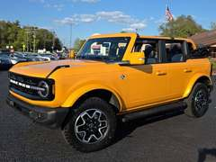
2022 Ford Bronco Outer Banks
$3,595 over KBB fair price One owner
25,562 mi 2.7L 6-cyl turbo, 4x4 Cyber Orange Metallic 4-door ~19 mpg, about $6,145/yr in gas at 25,000 mi
314A Lux Package
The Auto Livery ★4.3, Ross, OH, 215 mi away, listed 397 days ago
25
2021 Ford Bronco Badlands
$2,815 over KBB fair price
73,229 mi 2.3L 4-cyl turbo, 4x4 Orange Metallic 4-door ~15 mpg, about $7,783/yr in gas at 25,000 mi
333A High Package
Clift Buick GMC ★4.8, Adrian, MI, 201 mi away, listed 41 days ago
26
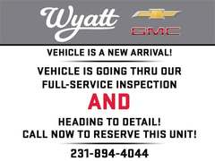
2022 Ford Bronco Black Diamond
$5,280 over KBB fair price One owner Just listed Sasquatch (35s)
0 mi 2.3L 4-cyl turbo, 4x4 Orange Metallic 4-door ~15 mpg, about $7,783/yr in gas at 25,000 mi
Sasquatch Package
Wyatt Chevrolet GMC ★5.0, Whitehall, MI, 168 mi away, listed 2 days ago
27
2026 Ford Bronco Big Bend
$12,359 over KBB fair price One owner Sasquatch (35s)
65 mi 2.3L 4-cyl turbo, 4x4 Orange 4-door ~15 mpg, about $7,783/yr in gas at 25,000 mi
Black Diamond Package; Sasquatch Package; 222A Mid
Packey Webb Ford ★4.4, Downers Grove, IL, 40 mi away, listed 29 days ago
28
2022 Ford Bronco 4-Door
$7,910 over KBB fair price One owner
42,927 mi 2.7L 6-cyl turbo, 4x4 Cyber Orange Metallic Tri-coat 4-door ~19 mpg, about $6,145/yr in gas at 25,000 mi
R & B Car Company ★4.4, Warsaw, IN, 102 mi away, listed 13 days ago
Cheaper and new: 2026 Bronco Sport in Orange Fury
Orange Fury Metallic Tri-coat is new for 2026 and is the closest Ford gets to yellow today. The Bronco Sport is the smaller, car-based Bronco: 26 mpg instead of 20, a quieter cabin, no removable roof. New ones in this color are being discounted $4,000 to $7,000 under sticker. All orange Bronco Sports .
1
2026 Ford Bronco Sport Big Bend
New $5,676 under sticker
New 1.5L 3-cyl turbo, 4x4 Orange Fury Metallic Tri-coat ~26 mpg, about $4,490/yr in gas at 25,000 mi
Convenience Package
GRAFF FORD OF CHESTERTON ★5.0, Chesterton, IN, 45 mi away, listed 79 days ago
2
2026 Ford Bronco Sport Big Bend
New $5,663 under sticker
New 1.5L 3-cyl turbo, 4x4 Orange Fury Metallic Tri-coat ~26 mpg, about $4,490/yr in gas at 25,000 mi
Black Appearance Package
Lebanon Ford ★4.7, Lebanon, OH, 229 mi away, listed 180 days ago
3
2026 Ford Bronco Sport Big Bend
New $5,750 under sticker
New 1.5L 3-cyl turbo, 4x4 Orange Fury Metallic Tri-coat ~26 mpg, about $4,490/yr in gas at 25,000 mi
Convenience Package; Black Appearance Package
Kings Ford ★4.7, Cincinnati, OH, 230 mi away, listed 38 days ago
4
2026 Ford Bronco Sport Big Bend
New $5,450 under sticker
New 1.5L 3-cyl turbo, 4x4 Orange Fury Metallic Tri-coat ~26 mpg, about $4,490/yr in gas at 25,000 mi
Suntrup Ford Westport ★4.2, Saint Louis, MO, 223 mi away, listed 114 days ago
5
2026 Ford Bronco Sport Big Bend
New $5,008 under sticker
New 1.5L 3-cyl turbo, 4x4 Orange Fury Metallic Tri-coat ~26 mpg, about $4,490/yr in gas at 25,000 mi
Buss Ford ★4.7, Mchenry, IL, 78 mi away, listed 298 days ago
6
2026 Ford Bronco Sport Outer Banks
New $5,750 under sticker
New 1.5L 3-cyl turbo, 4x4 Orange Fury Metallic Tri-coat ~26 mpg, about $4,490/yr in gas at 25,000 mi
Ford Connectivity Pack (1-Time Purchase - 7 Years)
Suntrup Ford Westport ★4.2, Saint Louis, MO, 223 mi away, listed 132 days ago
7
2026 Ford Bronco Sport Big Bend
New $5,277 under sticker
New 1.5L 3-cyl turbo, 4x4 Orange Fury Metallic Tri-coat ~26 mpg, about $4,490/yr in gas at 25,000 mi
Ford Connectivity Pack (1-Time Purchase - 7 Years)
Wetzel Ford ★4.3, Richmond, IN, 186 mi away, listed 194 days ago
8
2026 Ford Bronco Sport Big Bend
New $4,777 under sticker One owner
New 1.5L 3-cyl turbo, 4x4 Orange ~26 mpg, about $4,490/yr in gas at 25,000 mi
Convenience Package
Gordie Boucher Ford of Janesville ★5.0, Janesville, WI, 117 mi away, listed 32 days ago
9
2026 Ford Bronco Sport Big Bend
New $4,996 under sticker
New 1.5L 3-cyl turbo, 4x4 Orange ~26 mpg, about $4,490/yr in gas at 25,000 mi
Convenience Package; Interior Protection Package
Currie Ford of Valparaiso ★4.7, Valparaiso, IN, 42 mi away, listed 68 days ago
10
2026 Ford Bronco Sport Big Bend
New since last check New $4,750 under sticker
New 1.5L 3-cyl turbo, 4x4 Orange Fury Metallic Tri-coat ~26 mpg, about $4,490/yr in gas at 25,000 mi
Convenience Package; Interior Protection Package
Mike Murphy Ford ★4.6, Morton, IL, 95 mi away, listed 121 days ago
No full-size 2026 Bronco in Orange Fury has reached a dealer lot inside 250 miles yet; one can be ordered through any Ford store. This board checks every day and will flag the first one.
Want a true yellow and a new truck?
Order a 2026 Bronco in Oxford White or Wimbledon White and have it wrapped yellow. A quality full wrap runs about $3,500 to $5,500 in the Chicago area, lasts 5 to 7 years, protects the paint and peels off at resale.
Orange Fury (2026) is a factory alternative in the same warm family. Shows in the configurator on Big Bend, Outer Banks and Badlands.
Skip the aftermarket respray: $8,000+ and it hurts resale. Before she buys any Bronco
Pull the Ford OASIS warranty history by VIN at the dealer: confirms whether a 2021 to early-2022 2.7 V6 had its intake-valve engine replacement, and whether the hardtop was swapped under the 2021 recall.
Prefer a 2.3-liter four for commuting miles: cheaper, 1 to 2 mpg better, and it sidestepped the 2.7 valve problem.
Sasquatch 35-inch tires cost about 2 mpg, add road noise and run $1,600 a set. Great for the look, bad for 25,000 miles a year.
Best Bronco deals in any color
Out of about 1,366 used and 3,218 new Broncos inside 250 miles, these are the ones priced furthest under KBB fair purchase price (used) or under sticker (new), with no accident or salvage history. Blue, white, green and red are plentiful; a wrap turns any of them yellow. All "Great price" Broncos on Autotrader .
Used, ranked by deal score
1
2023 Ford Bronco Big Bend
$7,815 under KBB fair price Autotrader: Great price
30,092 mi 2.3L 4-cyl turbo, 4x4 White 4-door ~15 mpg, about $7,783/yr in gas at 25,000 mi
Top of the board: a 2023 Big Bend Great price per Autotrader, $7,815 under KBB, 30,092 miles, 4.5-star dealer. Ranked on dollars under KBB fair purchase price, miles, year, distance and dealer rating.
222A Mid Package
Findlay Chrysler Dodge Jeep Ram ★4.5, Findlay, OH, 217 mi away, listed 27 days ago
2
2023 Ford Bronco Outer Banks
$8,340 under KBB fair price Autotrader: Great price Price cut $3,812
70,360 mi 2.7L 6-cyl turbo, 4x4 Race Red 4-door ~19 mpg, about $6,145/yr in gas at 25,000 mi
Crippen Cars ★4.8, Lansing, MI, 193 mi away, listed 90 days ago
3
2023 Ford Bronco Black Diamond
$8,567 under KBB fair price Autotrader: Great price
12,452 mi 2.3L 4-cyl turbo, 4x4 Oxford White 2-door ~15 mpg, about $7,783/yr in gas at 25,000 mi
Dave White Chevrolet ★4.3, Sylvania, OH, 218 mi away, listed 83 days ago
4
2022 Ford Bronco Outer Banks
$6,308 under KBB fair price Autotrader: Great price One owner Price cut $8,659
70,567 mi 2.3L 4-cyl turbo, 4x4 Cactus Gray 4-door ~15 mpg, about $7,783/yr in gas at 25,000 mi
313A High Package
Capitol City Ford ★4.6, Indianapolis, IN, 140 mi away, listed 25 days ago
5
2023 Ford Bronco Outer Banks
$6,469 under KBB fair price Autotrader: Great price Price cut $1,100
10,972 mi 2.7L 6-cyl turbo, 4x4 Hot Pepper Red Metallic Tinted 4-door ~19 mpg, about $6,145/yr in gas at 25,000 mi
Team Chevrolet ★4.6, Valparaiso, IN, 42 mi away, listed 66 days ago
6
2023 Ford Bronco Outer Banks
Certified pre-owned $6,774 under KBB fair price Autotrader: Great price One owner
47,101 mi 2.7L 6-cyl turbo, 4x4 Shadow Black 4-door ~19 mpg, about $6,145/yr in gas at 25,000 mi
313A High Package
Lasco Ford ★4.7, Fenton, MI, 237 mi away, listed 32 days ago
7
2023 Ford Bronco Big Bend
$5,689 under KBB fair price Autotrader: Great price One owner Price cut $3,289
18,065 mi 2.7L 6-cyl turbo, 4x4 Eruption Green Metallic 4-door ~19 mpg, about $6,145/yr in gas at 25,000 mi
LaFontaine Lincoln Grand Rapids ★4.5, Grand Rapids, MI, 162 mi away, listed 81 days ago
8
2023 Ford Bronco Black Diamond
New since last check $6,068 under KBB fair price Autotrader: Great price One owner Just listed
15,936 mi 2.7L 6-cyl turbo, 4x4 Shadow Black 4-door ~19 mpg, about $6,145/yr in gas at 25,000 mi
322A Mid Package
Seymour Ford ★4.6, Jackson, MI, 192 mi away, listed 2 days ago
9
2023 Ford Bronco Outer Banks
$5,911 under KBB fair price Autotrader: Great price One owner
41,424 mi 2.7L 6-cyl turbo, 4x4 Iconic Silver Metallic 4-door ~19 mpg, about $6,145/yr in gas at 25,000 mi
Bill Jacobs MINI in Naperville ★4.7, Naperville, IL, 40 mi away, listed 61 days ago
10
2021 Ford Bronco Big Bend
$6,046 under KBB fair price Autotrader: Great price Price cut $1,000
21,698 mi 2.3L 4-cyl turbo, 4x4 Cactus Gray 4-door ~15 mpg, about $7,783/yr in gas at 25,000 mi
Tom Gill Chevrolet ★4.7, Florence, KY, 229 mi away, listed 96 days ago
11
2023 Ford Bronco Outer Banks
$6,000 under KBB fair price Autotrader: Great price One owner
27,579 mi 2.7L 6-cyl turbo, 4x4 Hot Pepper Red Metallic Tinted 4-door ~19 mpg, about $6,145/yr in gas at 25,000 mi
313A High Package
Webb Ford ★4.1, Highland, IN, 28 mi away, listed 159 days ago
12
2022 Ford Bronco Outer Banks
$6,097 under KBB fair price Autotrader: Great price
35,009 mi 2.3L 4-cyl turbo, 4x4 Oxford White 4-door ~15 mpg, about $7,783/yr in gas at 25,000 mi
Mike Castrucci Ford Lincoln of Alexandria ★4.4, Alexandria, KY, 240 mi away, listed 120 days ago
13
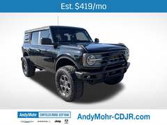
2021 Ford Bronco Big Bend
$5,245 under KBB fair price Autotrader: Great price One owner
42,712 mi 2.3L 4-cyl turbo, 4x4 Shadow Black 4-door ~15 mpg, about $7,783/yr in gas at 25,000 mi
222A Mid Package
Andy Mohr Chrysler Dodge Jeep Ram ★4.3, Indianapolis, IN, 124 mi away, listed 14 days ago
14
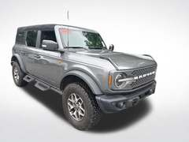
2023 Ford Bronco Badlands
$5,802 under KBB fair price Autotrader: Great price One owner
21,250 mi 2.7L 6-cyl turbo, 4x4 Carbonized Gray Metallic 4-door ~17 mpg, about $6,868/yr in gas at 25,000 mi
333A High Package
Kia Store East ★4.5, Louisville, KY, 239 mi away, listed 88 days ago
15
2023 Ford Bronco Outer Banks
Certified pre-owned $5,370 under KBB fair price Autotrader: Great price One owner
23,267 mi 2.7L 6-cyl turbo, 4x4 Race Red 4-door ~19 mpg, about $6,145/yr in gas at 25,000 mi
Village Ford ★4.7, Dearborn, MI, 247 mi away, listed 74 days ago
16
2023 Ford Bronco Big Bend
New since last check $4,671 under KBB fair price Autotrader: Great price One owner
27,561 mi 2.3L 4-cyl turbo, 4x4 Eruption Green Metallic 4-door ~15 mpg, about $7,783/yr in gas at 25,000 mi
222A Mid Package
Dorsett Automotive ★4.8, Terre Haute, IN, 129 mi away, listed 31 days ago
17
2024 Ford Bronco Badlands
$4,552 under KBB fair price Autotrader: Great price One owner
8,919 mi 2.7L 6-cyl turbo, 4x4 Cactus 2-door ~17 mpg, about $6,868/yr in gas at 25,000 mi
Napleton's River Oaks Chrysler Jeep Dodge ★5.0, Lansing, IL, 27 mi away, listed 25 days ago
18
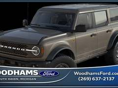
2025 Ford Bronco Badlands
$5,798 under KBB fair price Autotrader: Great price Sasquatch (35s)
6 mi 2.3L 4-cyl turbo, 4x4 Gray 4-door ~15 mpg, about $7,783/yr in gas at 25,000 mi
Sasquatch Package
Woodhams Ford Lincoln ★4.4, South Haven, MI, 113 mi away, listed 327 days ago
19
2023 Ford Bronco Outer Banks
$5,868 under KBB fair price Autotrader: Great price
64,756 mi 2.7L 6-cyl turbo, 4x4 Iconic Silver Metallic 4-door ~19 mpg, about $6,145/yr in gas at 25,000 mi
Jeff Wyler Acura of Fairfield ★4.6, Fairfield, OH, 219 mi away, listed 115 days ago
20
2023 Ford Bronco Big Bend
$4,992 under KBB fair price Autotrader: Great price
28,312 mi 2.3L 4-cyl turbo, 4x4 Shadow Black 4-door ~15 mpg, about $7,783/yr in gas at 25,000 mi
222A Mid Package
Carzby ★4.8, Fenton, MI, 238 mi away, listed 19 days ago
21
2025 Ford Bronco Badlands
Certified pre-owned $5,030 under KBB fair price Autotrader: Great price One owner
19,943 mi 2.7L 6-cyl turbo, 4x4 Azure Gray Metallic 4-door ~17 mpg, about $6,868/yr in gas at 25,000 mi
332A Mid Package
Hopkins Ford of Elgin ★4.4, Elgin, IL, 58 mi away, listed 67 days ago
22
2025 Ford Bronco Badlands
$4,511 under KBB fair price Autotrader: Great price One owner
8,612 mi 2.7L 6-cyl turbo, 4x4 Azure Gray Metallic 4-door ~17 mpg, about $6,868/yr in gas at 25,000 mi
334A Lux Package
Elmhurst Chrysler Dodge Jeep Ram ★5.0, Elmhurst, IL, 47 mi away, listed 24 days ago
23
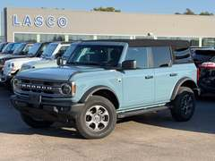
2023 Ford Bronco Big Bend
Certified pre-owned $4,566 under KBB fair price Autotrader: Great price One owner
41,572 mi 2.3L 4-cyl turbo, 4x4 Area 51 4-door ~15 mpg, about $7,783/yr in gas at 25,000 mi
222A Mid Package
Lasco Ford ★4.7, Fenton, MI, 237 mi away, listed 23 days ago
24
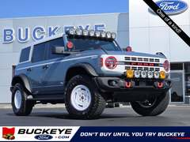
2025 Ford Bronco Heritage Edition
$5,020 under KBB fair price Autotrader: Great price One owner
10,851 mi 2.7L 6-cyl turbo, 4x4 Azure Gray Metallic Tri-coat 4-door ~19 mpg, about $6,145/yr in gas at 25,000 mi
Buckeye Ford Inc ★4.7, London, OH, 250 mi away, listed 67 days ago
25
2023 Ford Bronco Badlands
$4,729 under KBB fair price Autotrader: Great price One owner Price cut $2,680
10,344 mi 2.7L 6-cyl turbo, 4x4 White 4-door ~17 mpg, about $6,868/yr in gas at 25,000 mi
333A High Package
Spitzer Buick GMC ★4.5, Findlay, OH, 221 mi away, listed 64 days ago
26
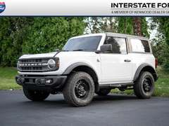
2022 Ford Bronco Black Diamond
$4,760 under KBB fair price Autotrader: Great price Price cut $1,948
46,840 mi 2.3L 4-cyl turbo, 4x4, manual Oxford White 2-door ~15 mpg, about $7,783/yr in gas at 25,000 mi
Interstate Ford Inc ★4.9, Miamisburg, OH, 219 mi away, listed 113 days ago
27
2022 Ford Bronco 2-Door
$5,121 under KBB fair price Autotrader: Great price Sasquatch (35s)
18,772 mi 2.7L 6-cyl turbo, 4x4 Iconic Silver Metallic 2-door ~17 mpg, about $6,868/yr in gas at 25,000 mi
Sasquatch Package
Vaughn Automotive ★3.3, Ottumwa, IA, 240 mi away, listed 60 days ago
28
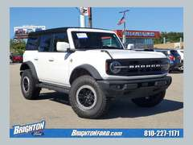
2023 Ford Bronco Outer Banks
Certified pre-owned $4,600 under KBB fair price Autotrader: Great price One owner Sasquatch (35s)
31,224 mi 2.7L 6-cyl turbo, 4x4 Oxford White 4-door ~17 mpg, about $6,868/yr in gas at 25,000 mi
Sasquatch Package
Brighton Ford ★4.8, Brighton, MI, 227 mi away, listed 39 days ago
29
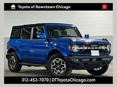
2022 Ford Bronco Outer Banks
$4,586 under KBB fair price Autotrader: Great price
32,493 mi 2.3L 4-cyl turbo, 4x4 Blue Metallic 4-door ~15 mpg, about $7,783/yr in gas at 25,000 mi
314A Lux Package
Toyota of Downtown Chicago ★4.4, Chicago, IL, 47 mi away, listed 44 days ago
30
2023 Ford Bronco Outer Banks
$4,933 under KBB fair price Autotrader: Great price Just listed
33,492 mi 2.7L 6-cyl turbo, 4x4 Shadow Black 4-door ~19 mpg, about $6,145/yr in gas at 25,000 mi
314A Lux Package
Findlay Chrysler Dodge Jeep Ram ★4.5, Findlay, OH, 217 mi away, listed 5 days ago
31
2023 Ford Bronco Badlands
$5,040 under KBB fair price Autotrader: Great price
18,012 mi 2.7L 6-cyl turbo, 4x4 Oxford White 4-door ~17 mpg, about $6,868/yr in gas at 25,000 mi
332A Mid Package
Poage Chrysler Dodge Jeep RAM FIAT ★4.5, Hannibal, MO, 215 mi away, listed 12 days ago
32
2021 Ford Bronco Outer Banks
$4,815 under KBB fair price Autotrader: Great price Price cut $1,464
56,636 mi 2.3L 4-cyl turbo, 4x4 Gray Metallic 4-door ~15 mpg, about $7,783/yr in gas at 25,000 mi
313A High Package
Tom Wood Ford ★4.4, Indianapolis, IN, 129 mi away, listed 88 days ago
33
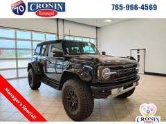
2024 Ford Bronco Raptor
$4,994 under KBB fair price Autotrader: Great price One owner Price cut $1,682
7,647 mi 3L 6-cyl turbo, 4x4 Shadow Black 4-door ~15 mpg, about $7,783/yr in gas at 25,000 mi
Cronin Richmond Toyota Nissan ★4.6, Richmond, IN, 186 mi away, listed 177 days ago
34
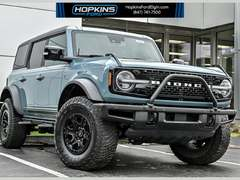
2021 Ford Bronco First Edition
Certified pre-owned $5,200 under KBB fair price Autotrader: Great price
25,593 mi 2.7L 6-cyl turbo, 4x4 Area 51 4-door ~19 mpg, about $6,145/yr in gas at 25,000 mi
Hopkins Ford of Elgin ★4.4, Elgin, IL, 58 mi away, listed 53 days ago
35
2021 Ford Bronco First Edition
$5,127 under KBB fair price Autotrader: Great price
29,197 mi 2.7L 6-cyl turbo, 4x4 Rapid Red Metallic Tinted Clea 2-door ~19 mpg, about $6,145/yr in gas at 25,000 mi
Lani Chevrolet GMC Chrysler Dodge Jeep Ram ★4.6, Mount Pleasant, IA, 193 mi away, listed 20 days ago
36
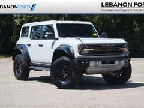
2026 Ford Bronco Raptor
$4,560 under KBB fair price Autotrader: Great price Price cut $4,448
1,550 mi 3L 6-cyl turbo, 4x4 Avalanche Gray 4-door ~15 mpg, about $7,783/yr in gas at 25,000 mi
Interior Carbon Fiber Pack
Lebanon Ford ★4.7, Lebanon, OH, 229 mi away, listed 61 days ago
New 4-door Big Bends with the biggest discounts
Big Bend 4-door with the 2.3 and the 222A Mid package is the sweet spot for a daily driver. Dealers are discounting 2026 stock thousands under sticker before any Ford rebate; add Ford Credit financing offers on top at the desk.
1
2026 Ford Bronco Big Bend
New $8,338 under sticker
New 2.3L 4-cyl turbo, 4x4 Shadow Black 4-door ~15 mpg, about $7,783/yr in gas at 25,000 mi
222A Mid Package
Ford of Homewood ★5.0, Homewood, IL, 23 mi away, listed 20 days ago
2
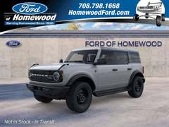
2026 Ford Bronco Big Bend
New $8,586 under sticker
New 2.3L 4-cyl turbo, 4x4 Avalanche Gray 4-door ~15 mpg, about $7,783/yr in gas at 25,000 mi
222A Mid Package; Black Appearance Package
Ford of Homewood ★5.0, Homewood, IL, 23 mi away, listed 32 days ago
3
2026 Ford Bronco Big Bend
New $9,000 under sticker
New 2.3L 4-cyl turbo, 4x4 Ruby Red Metallic Tinted Clear 4-door ~15 mpg, about $7,783/yr in gas at 25,000 mi
222A Mid Package
Dave Sinclair Ford ★4.7, St Louis, MO, 231 mi away, listed 223 days ago
4
2026 Ford Bronco Big Bend
New $8,120 under sticker
New 2.3L 4-cyl turbo, 4x4 Oxford White 4-door ~15 mpg, about $7,783/yr in gas at 25,000 mi
222A Mid Package
Clement Ford ★5.0, Wentzville, MO, 231 mi away, listed 107 days ago
5
2026 Ford Bronco Big Bend
New $8,288 under sticker
New 2.3L 4-cyl turbo, 4x4 Desert Sand 4-door ~15 mpg, about $7,783/yr in gas at 25,000 mi
222A Mid Package
Clement Ford ★5.0, Wentzville, MO, 231 mi away, listed 104 days ago
6
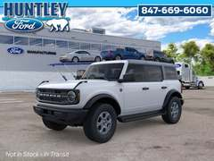
2026 Ford Bronco Big Bend
New $7,938 under sticker
New 2.3L 4-cyl turbo, 4x4 Oxford White 4-door ~15 mpg, about $7,783/yr in gas at 25,000 mi
Huntley Ford ★4.3, Huntley, IL, 68 mi away, listed 17 days ago
7
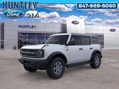
2026 Ford Bronco Big Bend
New $7,826 under sticker
New 2.3L 4-cyl turbo, 4x4 Oxford White 4-door ~15 mpg, about $7,783/yr in gas at 25,000 mi
Huntley Ford ★4.3, Huntley, IL, 68 mi away, listed 30 days ago
8
2026 Ford Bronco Big Bend
New $7,413 under sticker
New 2.3L 4-cyl turbo, 4x4 Desert Sand 4-door ~15 mpg, about $7,783/yr in gas at 25,000 mi
222A Mid Package
Bommarito Ford Superstore ★4.7, Hazelwood, MO, 217 mi away, listed 129 days ago
9
2026 Ford Bronco Big Bend
New $7,425 under sticker
New 2.3L 4-cyl turbo, 4x4 Desert Sand 4-door ~15 mpg, about $7,783/yr in gas at 25,000 mi
222A Mid Package
Bommarito Ford Superstore ★4.7, Hazelwood, MO, 217 mi away, listed 101 days ago
10
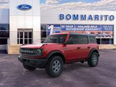
2026 Ford Bronco Big Bend
New $7,406 under sticker
New 2.3L 4-cyl turbo, 4x4 Ruby Red Metallic 4-door ~15 mpg, about $7,783/yr in gas at 25,000 mi
222A Mid Package
Bommarito Ford Superstore ★4.7, Hazelwood, MO, 217 mi away, listed 174 days ago
11
2026 Ford Bronco Big Bend
New since last check New $7,472 under sticker
New 2.3L 4-cyl turbo, 4x4 Oxford White 4-door ~15 mpg, about $7,783/yr in gas at 25,000 mi
222A Mid Package
Kerry Ford ★4.0, Springdale, OH, 223 mi away, listed 144 days ago
12
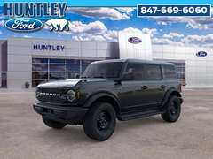
2026 Ford Bronco Big Bend
New $7,487 under sticker
New 2.3L 4-cyl turbo, 4x4 Shadow Black 4-door ~15 mpg, about $7,783/yr in gas at 25,000 mi
222A Mid Package; Black Appearance Package
Huntley Ford ★4.3, Huntley, IL, 68 mi away, listed 157 days ago
Cheapest new Broncos, period
1
2025 Ford Bronco 2-Door
New $5,990 under sticker
New 2.3L 4-cyl turbo, 4x4 Carbonized Gray Metallic 2-door ~15 mpg, about $7,783/yr in gas at 25,000 mi
Murgado Ford of Chicago ★4.2, Chicago, IL, 48 mi away, listed 371 days ago
2
2025 Ford Bronco 2-Door
New $5,990 under sticker
New 2.3L 4-cyl turbo, 4x4 Shadow Black 2-door ~15 mpg, about $7,783/yr in gas at 25,000 mi
Murgado Ford of Chicago ★4.2, Chicago, IL, 48 mi away, listed 360 days ago
3
2025 Ford Bronco 2-Door
New $5,990 under sticker
New 2.3L 4-cyl turbo, 4x4 Shadow Black 2-door ~15 mpg, about $7,783/yr in gas at 25,000 mi
Murgado Ford of Chicago ★4.2, Chicago, IL, 48 mi away, listed 321 days ago
4
2025 Ford Bronco 2-Door
New $5,990 under sticker
New 2.3L 4-cyl turbo, 4x4 Marsh Gray 2-door ~15 mpg, about $7,783/yr in gas at 25,000 mi
Murgado Ford of Chicago ★4.6, Chicago, IL, 48 mi away, listed 309 days ago
5
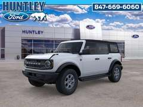
2026 Ford Bronco Big Bend
New $7,293 under sticker
New 2.3L 4-cyl turbo, 4x4 Oxford White 4-door ~15 mpg, about $7,783/yr in gas at 25,000 mi
Huntley Ford ★4.3, Huntley, IL, 68 mi away, listed 144 days ago
6
2026 Ford Bronco 4-Door
New $5,991 under sticker
New 2.3L 4-cyl turbo, 4x4 Shadow Black 4-door ~15 mpg, about $7,783/yr in gas at 25,000 mi
Murgado Ford of Chicago ★4.2, Chicago, IL, 48 mi away, listed 234 days ago
7
2026 Ford Bronco 2-Door
New $5,991 under sticker
New 2.3L 4-cyl turbo, 4x4 Carbonized Gray Metallic 2-door ~15 mpg, about $7,783/yr in gas at 25,000 mi
Murgado Ford of Chicago ★4.2, Chicago, IL, 48 mi away, listed 230 days ago
8
2026 Ford Bronco 4-Door
New $5,996 under sticker
New 2.3L 4-cyl turbo, 4x4 Gray Metallic 4-door ~15 mpg, about $7,783/yr in gas at 25,000 mi
Kerry Ford ★4.4, Springdale, OH, 223 mi away, listed 269 days ago
Road-warrior hybrids
For someone who drives a lot, the thing that matters most after the purchase price is the gas bill and the repair bill. These three put up 36 to 40 mpg in the real world, carry the best reliability records in the SUV class, and still sit high with all-wheel drive for Illinois winters. At 25,000 miles a year a RAV4 Hybrid costs roughly $2,994 a year in gas against $5,838 for a Bronco.
Fit for her
Toyota RAV4 Hybrid Reliability ★★★★★ · Comfort ★★★★ · Room ★★★★
39 mpg combined, AWD standard on the hybrid Toyota Safety Sense (adaptive cruise, lane centering) on every trim Hybrid battery warranty 10 yr / 150,000 mi on 2020 and newer Rear seats fold flat: 69 cu ft, a 6-foot sleeping length Fit for her
Honda CR-V Hybrid Reliability ★★★★★ · Comfort ★★★★★ · Room ★★★★★
37 to 40 mpg, the quietest and roomiest of the compact hybrids Sport-L and Sport Touring get leather and the big screen Most back-seat legroom in the class (41 in) Fewer used ones near Chicago; the good ones are 1 to 3 hours out Fit for her
Lexus NX 350h / RX 350h Reliability ★★★★★ · Comfort ★★★★★ · Room ★★★
Same Toyota hybrid hardware in a quieter, softer car with better seats NX 350h 39 mpg, RX 350h 36 mpg; skip the RX 500h (27 mpg) Lexus certified pre-owned adds a 6-year unlimited-mile warranty Costs $15,000 more than a RAV4 for the same bones; worth it only if comfort is the whole point
Toyota RAV4 Hybrid 1
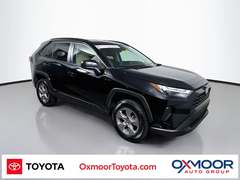
2024 Toyota RAV4 LE
Certified pre-owned $2,770 under KBB fair price Autotrader: Great price One owner
99,504 mi 2.5L hybrid, AWD Midnight Black Metallic ~39 mpg, about $2,994/yr in gas at 25,000 mi
Oxmoor Toyota ★4.6, Louisville, KY, 239 mi away, listed 74 days ago
2
2022 Toyota RAV4 Limited
$2,840 under KBB fair price Autotrader: Great price One owner
93,731 mi 2.5L hybrid, AWD Blizzard Pearl ~39 mpg, about $2,994/yr in gas at 25,000 mi
Limited Advanced Technology Package; Limited Grade
Old Orchard Nissan ★5.0, Skokie, IL, 56 mi away, listed 68 days ago
3
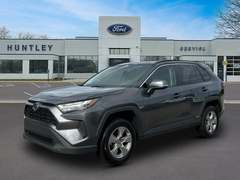
2022 Toyota RAV4 XLE
$2,257 under KBB fair price Autotrader: Great price One owner
85,176 mi 2.5L hybrid, AWD Magnetic Gray Metallic ~39 mpg, about $2,994/yr in gas at 25,000 mi
XLE Grade Weather Package
Huntley Ford ★4.3, Huntley, IL, 68 mi away, listed 68 days ago
4
2023 Toyota RAV4 Limited
$2,420 under KBB fair price Autotrader: Great price
104,826 mi 2.5L hybrid, AWD Magnetic Gray Metallic ~39 mpg, about $2,994/yr in gas at 25,000 mi
Chicago Northside Toyota ★4.9, Chicago, IL, 52 mi away, listed 128 days ago
5
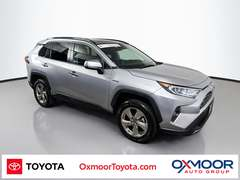
2021 Toyota RAV4 Limited
Certified pre-owned $2,710 under KBB fair price Autotrader: Great price Price cut $6,694
79,691 mi 2.5L hybrid, AWD Silver Sky Metallic ~39 mpg, about $2,994/yr in gas at 25,000 mi
Oxmoor Toyota ★4.6, Louisville, KY, 239 mi away, listed 52 days ago
6
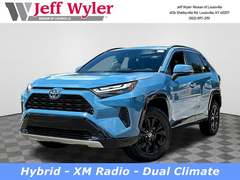
2022 Toyota RAV4 SE
$2,001 under KBB fair price Autotrader: Great price One owner
71,578 mi 2.5L hybrid, AWD Blue ~39 mpg, about $2,994/yr in gas at 25,000 mi
All Weather Liner Package (TMS)
Jeff Wyler Nissan of Louisville ★4.6, Louisville, KY, 238 mi away, listed 78 days ago
7
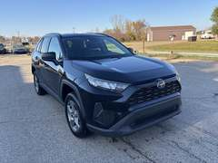
2022 Toyota RAV4 LE
New since last check $1,927 under KBB fair price Autotrader: Great price One owner
109,242 mi 2.5L hybrid, AWD Black ~39 mpg, about $2,994/yr in gas at 25,000 mi
Twins Chrysler Dodge Jeep Ram ★4.6, Wayland, MI, 150 mi away, listed 16 days ago
8
2023 Toyota RAV4 XLE
Certified pre-owned $1,965 under KBB fair price Autotrader: Great price
84,617 mi 2.5L hybrid, AWD Ice Cap ~39 mpg, about $2,994/yr in gas at 25,000 mi
Convenience Package
Oxmoor Toyota ★4.6, Louisville, KY, 239 mi away, listed 24 days ago
New RAV4 (all hybrid now) 1
no photo
2026 Toyota RAV4 LE
New $130 under sticker Just listed
New 2.5L hybrid, FWD Ice Cap ~39 mpg, about $2,994/yr in gas at 25,000 mi
Lou Fusz Toyota ★4.9, Saint Louis, MO, 228 mi away, listed 5 days ago
2
2026 Toyota RAV4 LE
New $0 under sticker
New 2.5L hybrid, FWD Ice Cap ~39 mpg, about $2,994/yr in gas at 25,000 mi
Hesser Toyota ★4.7, Janesville, WI, 118 mi away, listed 17 days ago
3
2026 Toyota RAV4 LE
New $-377 under sticker Just listed
New 2.5L hybrid, FWD Storm Cloud ~39 mpg, about $2,994/yr in gas at 25,000 mi
Victory Toyota Of Midtown ★4.6, Chicago, IL, 48 mi away, listed 3 days ago
Honda CR-V Hybrid 1
2022 Honda CR-V EX-L
$3,619 under KBB fair price Autotrader: Great price One owner Price cut $3,744
35,428 mi 2L hybrid, AWD Lunar Silver Metallic ~37 mpg, about $3,155/yr in gas at 25,000 mi
Reineke Ford Lincoln ★4.6, Findlay, OH, 218 mi away, listed 61 days ago
2
2024 Honda CR-V Sport
$3,020 under KBB fair price Autotrader: Great price One owner Price cut $724
47,097 mi 2L hybrid, AWD Crystal Black Pearl ~37 mpg, about $3,155/yr in gas at 25,000 mi
Fritz in Fishers ★4.5, Fishers, IN, 131 mi away, listed 9 days ago
3
2024 Honda CR-V Sport
Certified pre-owned $2,573 under KBB fair price Autotrader: Great price One owner
43,382 mi 2L hybrid, FWD Lunar Silver Metallic ~40 mpg, about $2,919/yr in gas at 25,000 mi
Dahl Honda Stevens Point ★4.5, Stevens Point, WI, 243 mi away, listed 99 days ago
4
2025 Honda CR-V Sport
$2,586 under KBB fair price One owner
43,619 mi 2L hybrid, AWD Black ~37 mpg, about $3,155/yr in gas at 25,000 mi
Gerald Nissan of Naperville ★4.4, Naperville, IL, 40 mi away, listed 60 days ago
5
2025 Honda CR-V Sport Touring
Certified pre-owned $2,403 under KBB fair price Autotrader: Great price One owner Price cut $3,329
64,338 mi 2L hybrid, AWD Still Night Pearl ~37 mpg, about $3,155/yr in gas at 25,000 mi
Honda Marysville ★5.0, Marysville, OH, 246 mi away, listed 68 days ago
6
2023 Honda CR-V Sport
Certified pre-owned $1,723 under KBB fair price Autotrader: Great price One owner Price cut $1,480
40,854 mi 2L hybrid, AWD Platinum White Pearl ~37 mpg, about $3,155/yr in gas at 25,000 mi
Rosen Honda ★4.5, Greenfield, WI, 116 mi away, listed 149 days ago
7
2023 Honda CR-V Sport Touring
$2,123 under KBB fair price Autotrader: Great price
66,518 mi 2L hybrid, AWD Black ~37 mpg, about $3,155/yr in gas at 25,000 mi
Highline Auto Sales ★4.7, Willowbrook, IL, 35 mi away, listed 15 days ago
8
2024 Honda CR-V Sport
$1,790 under KBB fair price Autotrader: Great price One owner
76,481 mi 2L hybrid, AWD Lunar Silver Metallic ~37 mpg, about $3,155/yr in gas at 25,000 mi
Brad Deery Honda ★4.9, West Burlington, IA, 176 mi away, listed 79 days ago
New CR-V Hybrid 1
no photo
2027 Honda CR-V Sport
New $1,517 under sticker
New 2L hybrid, FWD Platinum White Pearl ~40 mpg, about $2,919/yr in gas at 25,000 mi
Great Lakes Honda of Fishers ★4.6, Fishers, IN, 130 mi away, listed 34 days ago
2
2027 Honda CR-V Sport
New $1,764 under sticker
New 2L hybrid, AWD Solar Silver Metallic ~37 mpg, about $3,155/yr in gas at 25,000 mi
Ed Napleton Honda in Oak Lawn ★4.6, Oak Lawn, IL, 33 mi away, listed 12 days ago
3
2027 Honda CR-V Sport
New $1,764 under sticker
New 2L hybrid, AWD Meteorite Gray Metallic ~37 mpg, about $3,155/yr in gas at 25,000 mi
Ed Napleton Honda in River Oaks ★4.7, Lansing, IL, 27 mi away, listed 11 days ago
Lexus hybrids 1
2024 Lexus RX 500h F Sport
$7,062 under KBB fair price Autotrader: Great price One owner Price cut $3,647
33,023 mi 2.4L hybrid, 4x4 Copper Crest ~27 mpg, about $4,324/yr in gas at 25,000 mi
Cold Area Package; Accessory Package (Z1)
Seelye KIA of Battle Creek ★4.8, Battle Creek, MI, 156 mi away, listed 115 days ago
2
2025 Lexus NX 350h AWD
Certified pre-owned $5,740 under KBB fair price One owner
14,598 mi 2.5L hybrid, 4x4 Grecian Water ~39 mpg, about $2,994/yr in gas at 25,000 mi
Cold Area Package; Towing Package (2000 Lbs)
McGrath Lexus of Westmont ★4.8, Westmont, IL, 39 mi away, listed 111 days ago
3
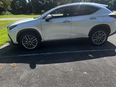
2024 Lexus NX 350h AWD
$3,460 under KBB fair price Autotrader: Great price One owner
16,000 mi 2.5L hybrid, 4x4 White ~39 mpg, about $2,994/yr in gas at 25,000 mi
Vision Package; Smart Phone Convenience Package; C
Private Seller Exchange, Cincinnati, OH, 231 mi away, listed 41 days ago
4
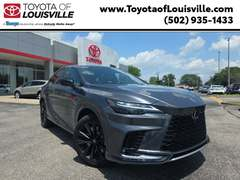
2025 Lexus RX 500h F Sport
$2,763 under KBB fair price Autotrader: Great price Price cut $1,657
13,163 mi 2.4L hybrid, 4x4 Cloudburst Gray ~27 mpg, about $4,324/yr in gas at 25,000 mi
Convenience Package; Accessory Package (2T)
Toyota of Louisville ★4.7, Louisville, KY, 239 mi away, listed 130 days ago
5
no photo
2024 Lexus RX 350h
Certified pre-owned $2,352 under KBB fair price One owner
5,673 mi 2.5L hybrid, 4x4 Iridium ~36 mpg, about $3,243/yr in gas at 25,000 mi
Accessory Package (Z1); Cold Area Package
McGrath Lexus of Westmont ★4.8, Westmont, IL, 39 mi away, listed 27 days ago
6
2025 Lexus NX 350h AWD
$2,138 under KBB fair price One owner
7,788 mi 2.5L hybrid, 4x4 Caviar ~39 mpg, about $2,994/yr in gas at 25,000 mi
Cold Area Package; Towing Package (2000 Lbs)
Mungenast Lexus of St Louis ★4.7, Ballwin, MO, 231 mi away, listed 69 days ago
7
2024 Lexus RX 500h F Sport
Certified pre-owned $2,700 under KBB fair price Autotrader: Great price One owner
30,029 mi 2.4L hybrid, 4x4 Caviar ~27 mpg, about $4,324/yr in gas at 25,000 mi
Convenience Package; Technology Package; Cold Area
Lexus of Toledo ★4.4, Toledo, OH, 215 mi away, listed 89 days ago
8
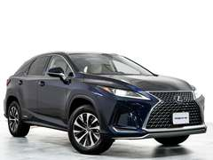
2021 Lexus RX 450h AWD
$2,643 under KBB fair price Autotrader: Great price One owner
100,573 mi 3.5L hybrid, 4x4 Mica ~30 mpg, about $3,892/yr in gas at 25,000 mi
Premium Package
Elmhurst Ford ★4.7, Bensenville, IL, 48 mi away, listed 67 days ago
Live-in-it space
If "lives in her car" is close to literal, the Bronco is the wrong shape: short, loud, a high load floor and 20 mpg. These are the vehicles with a flat floor you can stretch out on, three rows of seats that disappear, power everything and real highway quiet. The Sienna is the standout: a hybrid minivan that gets 36 mpg, offers AWD, and has 101 cu ft behind the front seats.
Fit for her
Toyota Sienna (hybrid) Reliability ★★★★★ · Comfort ★★★★★ · Room ★★★★★
36 mpg combined, every one is a hybrid, AWD available Third row folds into the floor; 8 feet of flat floor with the second row out Power sliding doors, 120-volt outlet, available built-in vacuum and fridge Ex-rental XLEs from Hertz are the cheap way in; get a pre-purchase inspection Fit for her
Toyota Grand Highlander / Highlander Hybrid Reliability ★★★★ · Comfort ★★★★★ · Room ★★★★★
34 to 36 mpg in a 3-row SUV; nothing else this size comes close Grand Highlander has 98 cu ft and an adult-size third row Highlander Hybrid used examples start near $30,000 Both ride and sound like a Lexus at highway speed Fit for her
Kia Telluride, Honda Odyssey, Kia Carnival Reliability ★★★★ · Comfort ★★★★★ · Room ★★★★★
Telluride: best-looking 3-row, 10-yr/100k powertrain warranty, but 21 mpg Odyssey: the best-driving minivan, 22 mpg, the most used supply near you Carnival: minivan that looks like an SUV; 2025+ hybrid gets 33 mpg All three cost $3,000+ more a year in gas than the Sienna at 25,000 miles
Toyota Sienna 1
2025 Toyota Sienna XLE
$4,608 under KBB fair price Autotrader: Great price One owner Just listed
59,341 mi 2.5L hybrid, FWD Gray ~36 mpg, about $3,243/yr in gas at 25,000 mi
Hertz Car Sales St. Louis ★4.6, Florissant, MO, 214 mi away, listed 6 days ago
2
2025 Toyota Sienna XLE
$3,319 under KBB fair price Autotrader: Great price One owner Price cut $2,701
56,291 mi 2.5L hybrid, FWD Silver ~36 mpg, about $3,243/yr in gas at 25,000 mi
Hertz Car Sales St. Louis ★4.6, Florissant, MO, 214 mi away, listed 52 days ago
3
2023 Toyota Sienna XLE
$3,715 under KBB fair price Autotrader: Great price
96,904 mi 2.5L hybrid, FWD Wind Chill Pearl ~36 mpg, about $3,243/yr in gas at 25,000 mi
Jeff Wyler Toyota of Clarksville ★4.5, Clarksville, IN, 231 mi away, listed 38 days ago
4
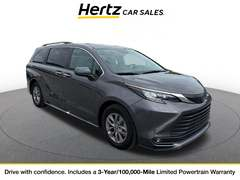
2025 Toyota Sienna XLE
$2,929 under KBB fair price Autotrader: Great price One owner
54,575 mi 2.5L hybrid, FWD Gray ~36 mpg, about $3,243/yr in gas at 25,000 mi
Hertz Car Sales Detroit, Woodhaven, MI, 246 mi away, listed 66 days ago
5
2021 Toyota Sienna XSE
$4,421 under KBB fair price Just listed
108,065 mi 2.5L hybrid, FWD Gray ~36 mpg, about $3,243/yr in gas at 25,000 mi
Automotive Connection ★4.0, Fairfield, OH, 219 mi away, listed 3 days ago
6
2025 Toyota Sienna XLE
$1,988 under KBB fair price Autotrader: Great price One owner
76,120 mi 2.5L hybrid, FWD Blue ~36 mpg, about $3,243/yr in gas at 25,000 mi
Hertz Car Sales St. Louis ★4.6, Florissant, MO, 214 mi away, listed 12 days ago
7
2023 Toyota Sienna LE
$2,120 under KBB fair price Autotrader: Great price Price cut $2,318
77,259 mi 2.5L hybrid, AWD Predawn Gray Mica ~35 mpg, about $3,336/yr in gas at 25,000 mi
Jeff Wyler Hyundai of Colerain ★4.5, Cincinnati, OH, 220 mi away, listed 27 days ago
8
2023 Toyota Sienna XSE
$1,986 under KBB fair price Autotrader: Great price
69,950 mi 2.5L hybrid, AWD Ruby Flare Pearl ~35 mpg, about $3,336/yr in gas at 25,000 mi
Cronin Richmond Toyota Nissan ★4.6, Richmond, IN, 186 mi away, listed 114 days ago
New Sienna 1
no photo
2026 Toyota Sienna LE
New $0 under sticker Just listed
New 2.5L hybrid, FWD Ice Cap ~36 mpg, about $3,243/yr in gas at 25,000 mi
Joseph Toyota of Cincinnati ★4.5, Cincinnati, OH, 221 mi away, listed 4 days ago
2
2026 Toyota Sienna LE
New $0 under sticker Just listed
New 2.5L hybrid, FWD Heavy Metal ~36 mpg, about $3,243/yr in gas at 25,000 mi
Toyota of Naperville ★5.0, Naperville, IL, 40 mi away, listed 5 days ago
3
no photo
2026 Toyota Sienna LE
New $0 under sticker Just listed
New 2.5L hybrid, FWD Pearl ~36 mpg, about $3,243/yr in gas at 25,000 mi
Sunshine Toyota ★4.7, Springfield, MI, 154 mi away, listed 4 days ago
Toyota Grand Highlander and Highlander Hybrid 1
2026 Toyota Grand Highlander AWD Hybrid
Certified pre-owned $5,040 under KBB fair price Autotrader: Great price Just listed
4,943 mi 2.5L hybrid, AWD Pearl ~34 mpg, about $3,434/yr in gas at 25,000 mi
Toyota of Brookfield ★3.5, Brookfield, WI, 128 mi away, listed 5 days ago
2
2025 Toyota Grand Highlander AWD Hybrid
$4,401 under KBB fair price Autotrader: Great price One owner
23,185 mi 2.5L hybrid, AWD Blueprint ~34 mpg, about $3,434/yr in gas at 25,000 mi
Gurley Leep Ford Lincoln ★4.7, South Bend, IN, 87 mi away, listed 60 days ago
3
2026 Toyota Highlander Limited
$3,000 under KBB fair price Autotrader: Great price One owner
20,683 mi 2.5L hybrid, AWD Midnight Black Metallic ~35 mpg, about $3,336/yr in gas at 25,000 mi
WHITE'S Honda of Lima ★4.7, Lima, OH, 194 mi away, listed 13 days ago
4
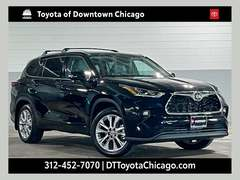
2026 Toyota Highlander Limited
$3,040 under KBB fair price Autotrader: Great price
8,259 mi 2.5L hybrid, AWD Midnight Black Metallic ~35 mpg, about $3,336/yr in gas at 25,000 mi
Toyota of Downtown Chicago ★4.4, Chicago, IL, 47 mi away, listed 13 days ago
5
2026 Toyota Highlander XLE
Certified pre-owned $2,125 under KBB fair price Autotrader: Great price One owner Just listed
11,260 mi 2.5L hybrid, AWD Pearl ~35 mpg, about $3,336/yr in gas at 25,000 mi
Wilde Toyota ★4.6, Milwaukee, WI, 120 mi away, listed 6 days ago
6
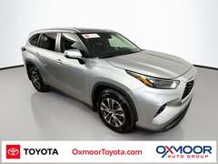
2023 Toyota Highlander XLE
Certified pre-owned $3,415 under KBB fair price Autotrader: Great price One owner
91,754 mi 2.5L hybrid, AWD Celestial Silver Metallic ~35 mpg, about $3,336/yr in gas at 25,000 mi
Oxmoor Toyota ★4.6, Louisville, KY, 239 mi away, listed 74 days ago
7
2023 Toyota Highlander Platinum
$3,201 under KBB fair price Autotrader: Great price
70,164 mi 2.5L hybrid, AWD Silver ~35 mpg, about $3,336/yr in gas at 25,000 mi
Monster Motors ★5.0, Michigan Center, MI, 193 mi away, listed 17 days ago
8
2021 Toyota Highlander XLE
$2,215 under KBB fair price Autotrader: Great price One owner
52,435 mi 2.5L hybrid, AWD Midnight Black Metallic ~35 mpg, about $3,336/yr in gas at 25,000 mi
Napleton's Auto Park of Urbana ★4.5, Urbana, IL, 79 mi away, listed 26 days ago
New Grand Highlander / Highlander Hybrid 1
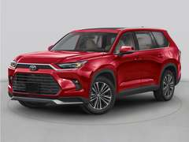
2026 Toyota Grand Highlander XLE
New $3,472 under sticker Just listed
New 2.5L hybrid, FWD Midnight Black Metallic ~34 mpg, about $3,434/yr in gas at 25,000 mi
Toyota of Brookfield ★3.9, Brookfield, WI, 128 mi away, listed 3 days ago
2
no photo
2026 Toyota Grand Highlander XLE
New $601 under sticker Just listed
New 2.5L hybrid, FWD Storm Cloud ~34 mpg, about $3,434/yr in gas at 25,000 mi
East Madison Toyota, Madison, WI, 150 mi away, listed 2 days ago
3
2026 Toyota Grand Highlander XLE
New $0 under sticker
New 2.5L hybrid, FWD Cloud ~34 mpg, about $3,434/yr in gas at 25,000 mi
Victory Toyota of St. Louis ★4.7, Saint Louis, MO, 231 mi away, listed 9 days ago
Kia Telluride 1
2024 Kia Telluride EX
$4,540 under KBB fair price Autotrader: Great price One owner
44,664 mi 3.8L 6cyl, FWD Ebony Black ~22 mpg, about $5,307/yr in gas at 25,000 mi
EX Captain's Chair Package
Jeff Wyler Honda in Florence ★5.0, Florence, KY, 229 mi away, listed 110 days ago
2
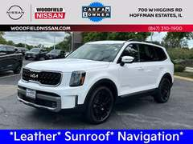
2023 Kia Telluride SX X-Line
$4,326 under KBB fair price Autotrader: Great price One owner
87,120 mi 3.8L 6cyl, AWD Glacial White Pearl ~21 mpg, about $5,560/yr in gas at 25,000 mi
Woodfield Nissan ★4.9, Hoffman Estates, IL, 57 mi away, listed 47 days ago
3
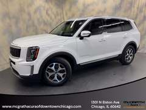
2022 Kia Telluride EX
$3,605 under KBB fair price Autotrader: Great price One owner
37,130 mi 3.8L 6cyl, FWD Glacial White Pearl ~22 mpg, about $5,307/yr in gas at 25,000 mi
McGrath Acura of Downtown Chicago ★4.5, Chicago, IL, 46 mi away, listed 155 days ago
4
2025 Kia Telluride S
Certified pre-owned $3,117 under KBB fair price Autotrader: Great price One owner
61,561 mi 3.8L 6cyl, AWD Glacial White Pearl ~21 mpg, about $5,560/yr in gas at 25,000 mi
Napleton's Kia of Elmhurst ★4.6, Elmhurst, IL, 47 mi away, listed 60 days ago
5
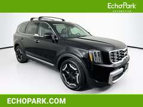
2025 Kia Telluride S
$3,339 under KBB fair price Autotrader: Great price One owner
51,853 mi 3.8L 6cyl, AWD Ebony Black ~21 mpg, about $5,560/yr in gas at 25,000 mi
EchoPark - St. Louis ★4.8, Chesterfield, MO, 232 mi away, listed 73 days ago
6
2022 Kia Telluride SX
$3,551 under KBB fair price Autotrader: Great price One owner
42,365 mi 3.8L 6cyl, AWD Black ~21 mpg, about $5,560/yr in gas at 25,000 mi
Car Wise Gurnee ★4.9, Gurnee, IL, 79 mi away, listed 26 days ago
Honda Odyssey 1
2025 Honda Odyssey EX-L
$2,039 under KBB fair price Autotrader: Great price One owner
50,576 mi 3.5L 6cyl, FWD Crystal Black Pearl ~22 mpg, about $5,307/yr in gas at 25,000 mi
Nissan of Elgin ★4.7, Elgin, IL, 63 mi away, listed 150 days ago
2
2024 Honda Odyssey EX-L
$2,080 under KBB fair price Autotrader: Great price One owner
72,918 mi 3.5L 6cyl, FWD Obsidian Blue Pearl ~22 mpg, about $5,307/yr in gas at 25,000 mi
Ed Napleton Honda in River Oaks ★4.7, Lansing, IL, 27 mi away, listed 58 days ago
3
2025 Honda Odyssey Sport-L
$806 under KBB fair price Autotrader: Great price One owner
49,199 mi 3.5L 6cyl, FWD Platinum White Pearl ~22 mpg, about $5,307/yr in gas at 25,000 mi
Advantage Acura of Naperville ★4.7, Naperville, IL, 40 mi away, listed 46 days ago
4
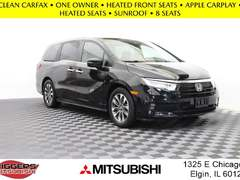
2023 Honda Odyssey EX-L
$739 under KBB fair price Autotrader: Great price One owner
17,505 mi 3.5L 6cyl, FWD Crystal Black Pearl ~22 mpg, about $5,307/yr in gas at 25,000 mi
Biggers Mitsubishi ★4.6, Elgin, IL, 58 mi away, listed 46 days ago
5
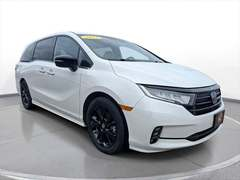
2023 Honda Odyssey Sport
$1,470 under KBB fair price Autotrader: Great price One owner
80,948 mi 3.5L 6cyl, FWD Platinum White Pearl ~22 mpg, about $5,307/yr in gas at 25,000 mi
SVG Chevrolet ★4.6, Greenville, OH, 186 mi away, listed 10 days ago
6
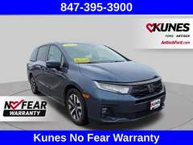
2025 Honda Odyssey EX-L
$488 under KBB fair price Autotrader: Great price One owner
53,069 mi 3.5L 6cyl, FWD Modern Steel Metallic ~22 mpg, about $5,307/yr in gas at 25,000 mi
Kunes Ford Of Antioch ★4.3, Antioch, IL, 85 mi away, listed 61 days ago
Kia Carnival 1
2025 Kia Carnival
$1,414 under KBB fair price Autotrader: Great price One owner
56,189 mi 3.5L 6cyl, FWD Deep Chroma Blue ~21 mpg, about $5,560/yr in gas at 25,000 mi
Kunes Hyundai of Sycamore ★4.5, Sycamore, IL, 68 mi away, listed 69 days ago
2
2024 Kia Carnival LX
$2,053 under KBB fair price Autotrader: Great price Price cut $1,298
75,193 mi 3.5L 6cyl, FWD Panthera Metal ~21 mpg, about $5,560/yr in gas at 25,000 mi
NW Automotive Group ★4.4, Cincinnati, OH, 227 mi away, listed 103 days ago
3
2024 Kia Carnival EX
Certified pre-owned $1,308 under KBB fair price Autotrader: Great price One owner Price cut $1,051
18,793 mi 3.5L 6cyl, FWD Ceramic Silver ~21 mpg, about $5,560/yr in gas at 25,000 mi
Kia Store East ★4.5, Louisville, KY, 239 mi away, listed 18 days ago
4
2023 Kia Carnival EX
$1,713 under KBB fair price Autotrader: Great price One owner
93,019 mi 3.5L 6cyl, FWD Panthera Metal ~21 mpg, about $5,560/yr in gas at 25,000 mi
Bill Estes Ford ★4.6, Brownsburg, IN, 124 mi away, listed 67 days ago
5
2022 Kia Carnival SX
$1,804 under KBB fair price Autotrader: Great price
70,502 mi 3.5L 6cyl, FWD Ceramic Silver ~21 mpg, about $5,560/yr in gas at 25,000 mi
Beechmont Toyota ★4.6, Cincinnati, OH, 239 mi away, listed 74 days ago
6
2023 Kia Carnival LX
$1,479 under KBB fair price
32,025 mi 3.5L 6cyl, FWD Deep Chroma Blue ~21 mpg, about $5,560/yr in gas at 25,000 mi
Great Lakes Subaru ★4.7, Findlay, OH, 220 mi away, listed 20 days ago
1
2027 Kia Carnival LX
New $2,726 under sticker Just listed
New 3.5L 6cyl, FWD Ceramic Silver ~21 mpg, about $5,560/yr in gas at 25,000 mi
Kia Store East ★4.5, Louisville, KY, 239 mi away, listed 2 days ago
2
2027 Kia Carnival
New $2,816 under sticker Just listed
New 3.5L 6cyl, FWD Deep Chroma Blue ~21 mpg, about $5,560/yr in gas at 25,000 mi
Kia Store East ★4.5, Louisville, KY, 239 mi away, listed 2 days ago
Bronco vibe, less drama
Boxy, high, four-wheel drive, fun to look at, but built for 200,000 miles of commuting. The 4Runner is the Bronco's natural rival with a Toyota service record; the Wrangler 4xe is the plug-in Jeep that is suddenly cheap used; the Subarus are the practical pick; the Bronco Sport keeps the badge for $20,000 less.
Fit for her
Toyota 4Runner Reliability ★★★★★ · Comfort ★★★ · Room ★★★★
2025+ generation: 2.4 turbo, 22 mpg, hybrid 23 mpg; the old 4.0 V6 gets 17 Legendary resale and durability; bodies and frames outlast everything here Stiffer ride and more wind noise than a RAV4, far less than a Bronco New SR5s are discounted only $2,000 to $3,000; used is barely cheaper Fit for her
Jeep Wrangler 4xe Reliability ★★ · Comfort ★★ · Room ★★★
Plug-in hybrid: 21 miles electric, then 20 mpg; cheap if she can charge at home Used 4xe Saharas are $21,000 to $25,000, $5,000 under KBB, because buyers fear the battery Loudest, roughest ride of the group; only if the open-top life matters more than the drive Battery warranty 8 yr / 100,000 mi; check for the 2023 recall fix Fit for her
Subaru Outback / Forester and Bronco Sport Reliability ★★★★ · Comfort ★★★★ · Room ★★★★
Outback 28 mpg, Forester 29 mpg, AWD standard, EyeSight driver assist standard Outback Wilderness and Forester Wilderness have the lifted, rugged look Bronco Sport Big Bend: 26 mpg, Bronco styling, certified ones under $22,000 Watch Subaru CVTs past 100,000 miles; buy a certified one with the extended warranty
Toyota 4Runner 1
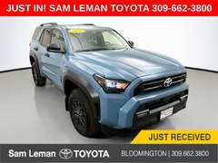
2026 Toyota 4Runner SR5
$4,190 under KBB fair price Autotrader: Great price One owner
8,211 mi 2.4L 4-cyl turbo, FWD Heritage Blue ~22 mpg, about $5,307/yr in gas at 25,000 mi
Sam Leman Toyota ★4.7, Bloomington, IL, 80 mi away, listed 27 days ago
2
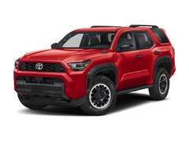
2025 Toyota 4Runner TRD Pro
$5,621 under KBB fair price Autotrader: Great price One owner
15,121 mi 2.4L hybrid, 4x4 Mudbath ~23 mpg, about $5,076/yr in gas at 25,000 mi
Mercedes-Benz of Hoffman Estates ★4.7, Hoffman Estates, IL, 57 mi away, listed 22 days ago
3
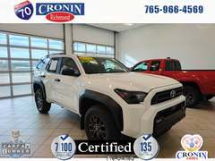
2026 Toyota 4Runner SR5
$2,766 under KBB fair price Autotrader: Great price One owner Price cut $1,734
2,475 mi 2.4L 4-cyl turbo, FWD Ice Cap ~22 mpg, about $5,307/yr in gas at 25,000 mi
Cronin Richmond Toyota Nissan ★4.6, Richmond, IN, 186 mi away, listed 38 days ago
4
2025 Toyota 4Runner SR5
$3,589 under KBB fair price Autotrader: Great price Price cut $2,233
32,243 mi 2.4L 4-cyl turbo, 4x4 Underground ~22 mpg, about $5,307/yr in gas at 25,000 mi
Napleton St Louis Nissan ★4.8, Saint Louis, MO, 223 mi away, listed 47 days ago
5
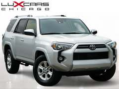
2024 Toyota 4Runner SR5
$2,925 under KBB fair price One owner
39,344 mi 4L 6cyl, FWD Classic Silver Metallic ~17 mpg, about $6,868/yr in gas at 25,000 mi
Lux Cars Chicago ★4.5, Buffalo Grove, IL, 62 mi away, listed 52 days ago
6
2026 Toyota 4Runner SR5
Certified pre-owned $2,532 under KBB fair price
13,240 mi 2.4L 4-cyl turbo, 4x4 Black ~22 mpg, about $5,307/yr in gas at 25,000 mi
Ed Martin Toyota ★4.7, Noblesville, IN, 130 mi away, listed 59 days ago
7
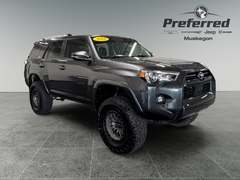
2022 Toyota 4Runner SR5 Premium
$2,740 under KBB fair price Autotrader: Great price Price cut $782
48,270 mi 4L 6cyl, 4x4 Magnetic Gray Metallic ~17 mpg, about $6,868/yr in gas at 25,000 mi
Preferred Chrysler Dodge Jeep Ram of Muskegon ★4.5, Muskegon, MI, 157 mi away, listed 81 days ago
8
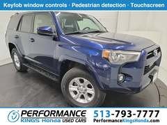
2023 Toyota 4Runner SR5
$2,577 under KBB fair price Autotrader: Great price
57,853 mi 4L 6cyl, 4x4 Nautical Blue Metallic ~17 mpg, about $6,868/yr in gas at 25,000 mi
Performance Kings Honda ★4.4, Cincinnati, OH, 230 mi away, listed 58 days ago
New 4Runner 1
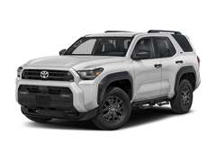
2026 Toyota 4Runner SR5
New $2,902 under sticker
New 2.4L 4-cyl turbo, 4x4 Ice ~22 mpg, about $5,307/yr in gas at 25,000 mi
Toyota of Brookfield ★3.5, Brookfield, WI, 128 mi away, listed 26 days ago
2
2026 Toyota 4Runner SR5
New $2,954 under sticker
New 2.4L 4-cyl turbo, 4x4 Red ~22 mpg, about $5,307/yr in gas at 25,000 mi
Toyota of Brookfield ★3.5, Brookfield, WI, 128 mi away, listed 25 days ago
3
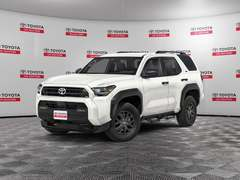
2026 Toyota 4Runner SR5
New $2,599 under sticker
New 2.4L 4-cyl turbo, 4x4 Ice ~22 mpg, about $5,307/yr in gas at 25,000 mi
Toyota on Western ★4.5, Chicago, IL, 37 mi away, listed 27 days ago
Jeep Wrangler (4xe and 2.0 turbo) 1
2022 Jeep Wrangler Unlimited Sahara
$5,033 under KBB fair price Autotrader: Great price One owner
25,048 mi 2L hybrid, 4x4 Granite Crystal Metallic Clear ~20 mpg, about $5,838/yr in gas at 25,000 mi
Cold Weather Group
Driven Auto Dundee ★4.9, East Dundee, IL, 62 mi away, listed 9 days ago
2
2023 Jeep Wrangler Unlimited Sahara
$4,676 under KBB fair price Autotrader: Great price One owner
56,006 mi 2L hybrid, 4x4 Black Clearcoat ~20 mpg, about $5,838/yr in gas at 25,000 mi
Old Orchard Nissan ★5.0, Skokie, IL, 56 mi away, listed 66 days ago
3
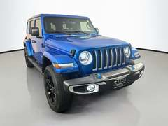
2022 Jeep Wrangler Unlimited Sahara
$4,830 under KBB fair price Autotrader: Great price One owner
38,809 mi 2L hybrid, 4x4 Hydro Blue Pearl Coat ~20 mpg, about $5,838/yr in gas at 25,000 mi
Cold Weather Group; Trailer Tow & HD Electrical Gr
Auffenberg Ford Belleville ★4.7, Belleville, IL, 221 mi away, listed 93 days ago
4
2023 Jeep Wrangler Unlimited Sahara
New since last check $4,111 under KBB fair price Autotrader: Great price One owner Just listed
32,700 mi 2L hybrid, 4x4 High Velocity Clearcoat ~20 mpg, about $5,838/yr in gas at 25,000 mi
Cold Weather Group
Napleton's River Oaks Chrysler Jeep Dodge ★5.0, Lansing, IL, 27 mi away, listed 3 days ago
5
2021 Jeep Wrangler Unlimited Sahara
$4,520 under KBB fair price Autotrader: Great price One owner
50,593 mi 2L hybrid, 4x4 Granite Crystal Metallic Clear ~20 mpg, about $5,838/yr in gas at 25,000 mi
Cold Weather Group
Smart Hyundai of Davenport ★4.5, Davenport, IA, 143 mi away, listed 34 days ago
6
2022 Jeep Wrangler Unlimited Sport
$4,400 under KBB fair price Autotrader: Great price One owner
82,136 mi 3L 6-cyl turbo, 4x4 Sarge Green Clearcoat ~19 mpg, about $6,145/yr in gas at 25,000 mi
Quick Order Package 26L Altitude; 8.4" Radio & Pre
Huntley Ford ★4.3, Huntley, IL, 68 mi away, listed 117 days ago
7
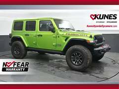
2025 Jeep Wrangler Unlimited Rubicon
New since last check $5,480 under KBB fair price Autotrader: Great price One owner
1,492 mi 3.6L 6cyl, 4x4 Mojito Clearcoat ~19 mpg, about $6,145/yr in gas at 25,000 mi
Quick Order Package 24Y Rubicon X; Trailer Tow & A
Kunes Hyundai of Sycamore ★4.5, Sycamore, IL, 68 mi away, listed 69 days ago
8
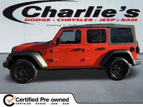
2023 Jeep Wrangler Unlimited Sport
Certified pre-owned $4,055 under KBB fair price Autotrader: Great price One owner Price cut $1,034
32,004 mi 2L 4-cyl turbo, 4x4 Punkn Metallic Clearcoat ~21 mpg, about $5,560/yr in gas at 25,000 mi
Charlie's Dodge Chrysler Jeep ★4.4, Maumee, OH, 217 mi away, listed 34 days ago
Subaru Outback and Forester 1
2021 Subaru Forester Touring
$5,798 under KBB fair price Autotrader: Great price One owner
119,688 mi 2.5L 4cyl, 4x4 Magnetite Gray Metallic ~29 mpg, about $4,026/yr in gas at 25,000 mi
Popular Package #2
Castle Subaru Of McHenry ★4.6, Mchenry, IL, 77 mi away, listed 58 days ago
2
2021 Subaru Forester Limited
$3,805 under KBB fair price Autotrader: Great price
79,692 mi 2.5L 4cyl, 4x4 Bronze ~29 mpg, about $4,026/yr in gas at 25,000 mi
Popular Package #3
Showcase Auto Sales LLC ★4.5, Chesaning, MI, 231 mi away, listed 17 days ago
3
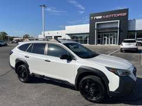
2022 Subaru Outback Wilderness
$3,169 under KBB fair price One owner Price cut $3,000
80,378 mi 2.4L 4-cyl turbo, 4x4 Crystal White Pearl ~25 mpg, about $4,670/yr in gas at 25,000 mi
Wilderness Package
RS Motors ★4.9, Indianapolis, IN, 129 mi away, listed 167 days ago
4
2021 Subaru Outback Touring
$3,182 under KBB fair price Just listed
91,213 mi 2.5L 4cyl, 4x4 Gray ~28 mpg, about $4,170/yr in gas at 25,000 mi
Popular Package #2
US 24 Auto Group ★4.6, Redford, MI, 248 mi away, listed 4 days ago
5
2024 Subaru Outback Touring XT
$2,069 under KBB fair price Autotrader: Great price One owner Price cut $1,262
39,328 mi 2.4L 4-cyl turbo, 4x4 Blue ~25 mpg, about $4,670/yr in gas at 25,000 mi
Ford Lincoln of Lafayette ★4.5, Lafayette, IN, 78 mi away, listed 38 days ago
6
2021 Subaru Outback Touring
$2,323 under KBB fair price Autotrader: Great price One owner
58,849 mi 2.5L 4cyl, 4x4 Magnetite Gray Metallic ~28 mpg, about $4,170/yr in gas at 25,000 mi
Popular Package #2
Bill Jacobs BMW Mini ★4.7, Naperville, IL, 40 mi away, listed 47 days ago
7
2023 Subaru Forester
$2,046 under KBB fair price
91,376 mi 2.5L 4cyl, 4x4 Blue ~29 mpg, about $4,026/yr in gas at 25,000 mi
Alloy Wheel Package & Roof Rails
Auto House of Bloomington ★4.8, Bloomington, IL, 81 mi away, listed 178 days ago
8
2021 Subaru Forester Premium
$2,020 under KBB fair price Autotrader: Great price One owner
68,076 mi 2.5L 4cyl, 4x4 Gray Metallic ~29 mpg, about $4,026/yr in gas at 25,000 mi
Popular Package #1
SPECIALTY AUTO SALES & SERVICE ★4.3, Suamico, WI, 232 mi away, listed 32 days ago
New Outback / Forester 1
2026 Subaru Forester Premium
New $5,739 under sticker
New 2.5L 4cyl, 4x4 Crystal White Pearl ~29 mpg, about $4,026/yr in gas at 25,000 mi
Subaru Evergreen Park ★4.6, Evergreen Park, IL, 33 mi away, listed 34 days ago
2
2026 Subaru Forester Premium
New $2,349 under sticker
New 2.5L 4cyl, 4x4 Crimson Red Pearl ~29 mpg, about $4,026/yr in gas at 25,000 mi
Subaru Evergreen Park ★4.6, Evergreen Park, IL, 33 mi away, listed 25 days ago
3
2026 Subaru Forester Sport
New $5,459 under sticker
New 2.5L 4cyl, 4x4 Crystal White Pearl ~29 mpg, about $4,026/yr in gas at 25,000 mi
Sport Package
Subaru Evergreen Park ★4.6, Evergreen Park, IL, 33 mi away, listed 139 days ago
Ford Bronco Sport (any color) 1
2023 Ford Bronco Sport Big Bend
Certified pre-owned $5,115 under KBB fair price Autotrader: Great price One owner Price cut $2,000
36,189 mi 1.5L 3-cyl turbo, 4x4 Gray Metallic ~26 mpg, about $4,490/yr in gas at 25,000 mi
Auto Park Ford ★5.0, Sturgis, MI, 130 mi away, listed 52 days ago
2
2024 Ford Bronco Sport Big Bend
Certified pre-owned $4,470 under KBB fair price Autotrader: Great price
37,761 mi 1.5L 3-cyl turbo, 4x4 Azure Gray Metallic ~26 mpg, about $4,490/yr in gas at 25,000 mi
Black Diamond Off-Road Package; Class II Trailer T
Elmhurst Ford ★4.7, Bensenville, IL, 48 mi away, listed 80 days ago
3
2023 Ford Bronco Sport Heritage
Certified pre-owned $4,570 under KBB fair price Autotrader: Great price One owner
25,096 mi 1.5L 3-cyl turbo, 4x4 Carbonized Gray Metallic ~26 mpg, about $4,490/yr in gas at 25,000 mi
Zeigler Ford Lincoln Elkhart ★4.5, Elkhart, IN, 100 mi away, listed 91 days ago
4
2023 Ford Bronco Sport Big Bend
$3,913 under KBB fair price Autotrader: Great price One owner
21,922 mi 1.5L 3-cyl turbo, 4x4 Blue Metallic ~26 mpg, about $4,490/yr in gas at 25,000 mi
Convenience Package
Rizza Buick Cadillac GMC. ★4.3, Tinley Park, IL, 24 mi away, listed 184 days ago
5
2024 Ford Bronco Sport Big Bend
Certified pre-owned $3,920 under KBB fair price Autotrader: Great price
24,983 mi 1.5L 3-cyl turbo, 4x4 Blue Metallic ~26 mpg, about $4,490/yr in gas at 25,000 mi
Convenience Package
Alphorn Ford ★4.5, Monroe, WI, 132 mi away, listed 89 days ago
6
2023 Ford Bronco Sport Big Bend
Certified pre-owned $3,470 under KBB fair price Autotrader: Great price One owner
27,670 mi 1.5L 3-cyl turbo, 4x4 Gray Metallic ~26 mpg, about $4,490/yr in gas at 25,000 mi
Convenience Package
Elmhurst Ford ★4.7, Bensenville, IL, 48 mi away, listed 61 days ago
7
2023 Ford Bronco Sport Big Bend
Certified pre-owned $3,820 under KBB fair price Autotrader: Great price One owner Price cut $1,999
31,725 mi 1.5L 3-cyl turbo, 4x4 Chili Pepper Red ~26 mpg, about $4,490/yr in gas at 25,000 mi
Convenience Package
Suntrup Ford-Kirkwood ★4.3, Kirkwood, MO, 228 mi away, listed 97 days ago
8
2023 Ford Bronco Sport Big Bend
Certified pre-owned $3,465 under KBB fair price Autotrader: Great price One owner
31,486 mi 1.5L 3-cyl turbo, 4x4 Silver Metallic ~26 mpg, about $4,490/yr in gas at 25,000 mi
Convenience Package
Auto Park Ford ★5.0, Sturgis, MI, 130 mi away, listed 52 days ago
How to decide
The honest read on a Bronco for 25,000 miles a year
Gas: 19 to 21 mpg means about $5,838 a year at today's Illinois prices. A RAV4 Hybrid is $2,994. Over five years that gap is a used car.Noise: the Bronco's flat windshield and removable roof make it the loudest vehicle on this board at highway speed. Outer Banks with the sound-deadening headliner helps. Test-drive it at 70 mph before falling in love.Reliability: Consumer Reports rates the Bronco average, ahead of the Wrangler and well behind the 4Runner and RAV4. Known issues: 2021 to early-2022 2.7 V6 intake valves (engine replacements under warranty, fixed in production October 2021), early hardtops replaced under recall, and tie rods on hard off-road use.Resale: strong. Broncos hold value better than almost anything but a 4Runner, which softens the gas bill when she sells.If it has to be a Bronco: 2023 or newer, 2.3 engine, 4-door, Big Bend or Outer Banks, no Sasquatch, hardtop, and a Ford Power Protect extended warranty if she is buying used out of warranty. My ranking for her
Toyota RAV4 Hybrid (or CR-V Hybrid if she wants more room). Cheapest to own by a mile, AWD, bulletproof. Buy a 2022 to 2024 one under $28,000 or a new 2026 at sticker.Toyota Sienna if she really does live out of the car: nothing else combines 36 mpg with a flat 8-foot floor.Toyota 4Runner (2025+) for the rugged look without the Bronco's noise and repair record. Pay the premium once, keep it 15 years.Yellow Bronco : the Lafayette Yellowstone Heritage Edition at $54,995 or the Skokie Orange Metallic Wildtrak at $40,997, with eyes open about gas and noise. It is the only one on this list she will smile at every morning, and that counts for something.
Side by side at 25,000 miles a year
Vehicle MPG Gas / yr Typical price Reliability Comfort and noise Buy it for Ford Bronco 2.3 Big Bend 4-door 21 $5,560 $38k new / $30k used Average (CR); 2.3 avoids the V6 valve issue Loud at 70 mph, firm ride, hardtop creaks Removable roof, 4x4, resale, the look Ford Bronco 2.7 Outer Banks / Badlands 19 $6,145 $42k new / $34k used Average; 2021 to early-2022 V6 had valve failures Quieter trim, heated seats; still loud Power, towing, luxury trims Toyota RAV4 Hybrid 39 $2,994 $34k new / $25k used Excellent Quiet, soft, great seats Best cost per mile here Honda CR-V Hybrid 38 $3,072 $36k new / $27k used Excellent Quietest compact, roomiest back seat Comfort and space Lexus NX 350h 39 $2,994 $48k new / $47k used Excellent Luxury quiet, best seats If comfort is the whole point Toyota Sienna hybrid 36 $3,243 $44k new / $32k used Excellent Minivan quiet, flat floor, sliding doors Living in it, hauling anything Toyota Grand Highlander hybrid 34 $3,434 $46k new / $50k used Very good Big, quiet, adult third row Family-size with real mpg Kia Telluride 21 $5,560 $36k new / $26k used Good; long warranty Very comfortable, 3 rows Looks and warranty, not mpg Toyota 4Runner (2025+) 22 $5,307 $44k new / $38k used Excellent Firm, some wind noise Bronco shape with Toyota bones Jeep Wrangler 4xe 20 $5,838 $50k new / $22k used Below average Loud, rough Only for the open-top life Subaru Outback 28 $4,170 $30k new / $20k used Good Quiet, comfortable, wagon-easy loading Practical AWD on a budget Ford Bronco Sport 1.5 26 $4,490 $31k new / $21k used Average Car-quiet, small Bronco badge, half the price
Gas at $4.67 a gallon (AAA Illinois average, mid-October). MPG is EPA combined for the common configuration. Payments on the listings assume 10% down, 7.5% APR, 72 months and 7% tax and fees. "Under KBB" compares the asking price with Kelley Blue Book's fair purchase price as Autotrader reports it for that exact car.
How to shop these
Every "View" button opens the live Autotrader listing. Prices move daily; the Lafayette Yellowstone Heritage Edition at $54,995 or the Skokie Orange Metallic Wildtrak at $40,997 are the ones to call first.
For any used car: ask for the OASIS report (Ford), Toyota or Honda service history by VIN, and get a $150 to $200 independent pre-purchase inspection. Walk away from anything with a branded title.
Out-of-state purchases (Indiana, Wisconsin, Michigan, Ohio) are fine: the dealer collects no sales tax and she pays Illinois tax at titling. Budget a day for the drive.
Financing: get a credit-union pre-approval first (Consumers Credit Union, Alliant), then let the dealer try to beat it. Ford Credit runs 1.9% to 3.9% offers on 2026 Broncos most months.
Listings from Autotrader's dealer feed, 2026-11-02, searched from zip 60950 with a 250-mile radius; counts are Autotrader's totals that day. Reliability notes draw on Consumer Reports owner surveys and the NHTSA investigation of the 2021 Bronco 2.7-liter engine. This is research, not a dealer quote; confirm price, fees and history on the listing and in person.  2025 Toyota Sienna XLE76,120 mi2.5L hybrid, FWDBlue~36 mpg, about $3,243/yr in gas at 25,000 miHertz Car Sales St. Louis ★4.6, Florissant, MO, 214 mi away, listed 12 days ago
2025 Toyota Sienna XLE76,120 mi2.5L hybrid, FWDBlue~36 mpg, about $3,243/yr in gas at 25,000 miHertz Car Sales St. Louis ★4.6, Florissant, MO, 214 mi away, listed 12 days ago